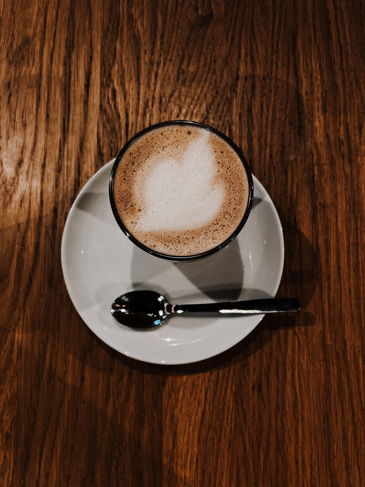

CAFE LAGANO · SINDELFINGEN
Kaffee.
Freunde.
Ganz lagano.
Ein Ort für guten Kaffee, lange Gespräche und ein Stück Balkan mitten in Sindelfingen.
Getränkekarte ansehen Am Marktplatz. Mitten im Leben.
Einfach mal bleiben
Guter Kaffee.
Gute Leute.
Kein Stress.
„Lagano“ heißt: ganz entspannt. Kurz den Alltag vergessen, einen Kaffee bestellen und aus einem kleinen Moment einen langen Nachmittag machen.
Mit Freunden. Mit Zeit. Mitten am Marktplatz.
Das ist Lagano
Unsere Story
Ein bisschen
Balkan.
Ganz viel Zeit.
Auf dem Balkan gehört zum Kaffee das Gespräch. Man setzt sich, trifft Freunde und bleibt noch ein bisschen.
Dieses Gefühl bringen wir nach Sindelfingen. Mit Kaffee, Cockta, Cedevita und einem Platz für gute Gesellschaft.
Schön, dass du da bist.Was uns ausmacht
Vier gute Gründe,
noch zu bleiben.
Kaffee
Espresso, Cappuccino oder etwas Kaltes. Hauptsache in Ruhe.
Balkan-Klassiker
Cockta, Cedevita und ein paar Dinge, die sofort vertraut wirken.
Gute Gesellschaft
Lagano funktioniert am besten mit Leuten, mit denen man gerne Zeit verbringt.
Mitten in Sindelfingen
Direkt am Marktplatz. Für die kleine Pause zwischendurch.
Kleine Momente, die bleiben
So fühlt sich
Lagano an.
Eine Tasse auf dem Tisch.
Ein Gespräch, das länger dauert.



Dein Platz am Marktplatz
Noch auf
einen Kaffee?
Marktplatz
71063 SindelfingenRoute öffnen (öffnet in neuem Tab)
- Montag – Donnerstag
- 09:00 – 22:00
- Freitag – Samstag
- 09:00 – 23:00
- Sonntag
- 10:00 – 21:00
Für den Morgenkaffee.
Und für das „Bleiben wir noch kurz?“
Wir sehen uns am Marktplatz
Heute noch
nichts vor?
Komm auf einen Kaffee vorbei.
Bring deine Leute mit. Nimm dir Zeit.